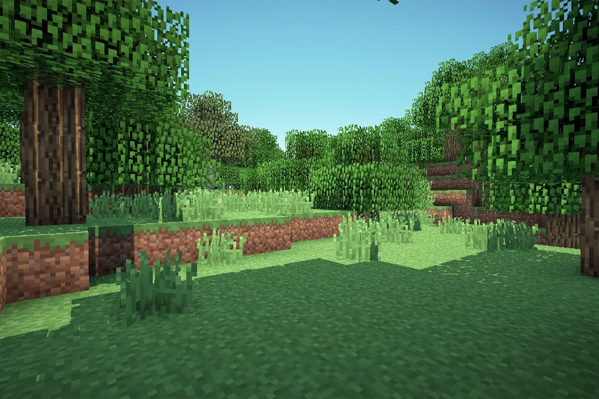
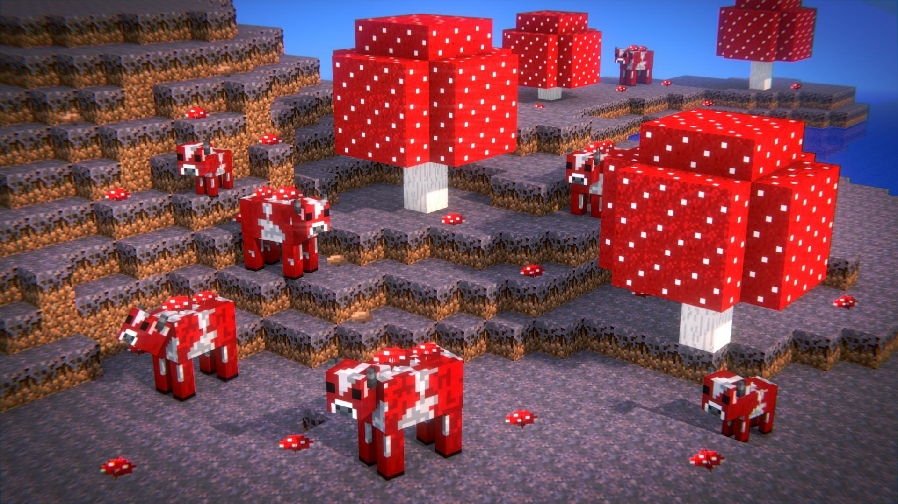
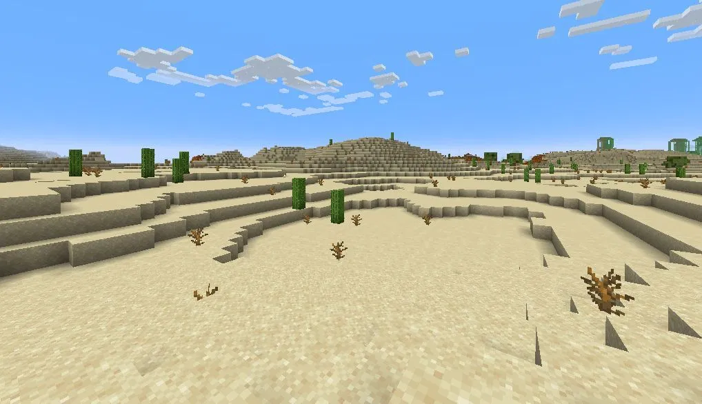

Minecrat is a open world survival game whch a big focus on creativity.
Minecraft first come out in May/17/2009 and to this day it still has a huge community and regular updateds
. This website many become outdate becuse of future updates but as of 10/2/2025 is website is a great resource
for new player want to lrean about the game and has many helpful tips. Down below will be a list of boim in the Overworld of minecraft.
Biomes Of The Overworld



A great place to get wood,
there is 3 types of forest. Birch forest has
nothing but birch trees. A flower forest has
birch and oak trees and has the name gives way,
a crazy amount of flowers. A generic forest just
has oak and birch trees. All forest can have bee hives and wolfs which will
bones can become your dog!
This is the rarest boim in the game! If you hind it wright down the coordinates because you may not find a another one. It has giant mushrooms, mycelium, and mushrooms cows! The mycelium stops mobs form spawning so its one of the most peaceful boim in the game. The mushrooms cows can be milked with a wooden blow which gives you mushroom soup! Trees do not spawn here so wood is scarce here.
Sand and more sand that what you get in the Desert. 3 structures can spawn here a temple, water well, and a village. Its also the home of camels, cactuses, and Husk a hostel mob which if hit will deplete hunger bar.